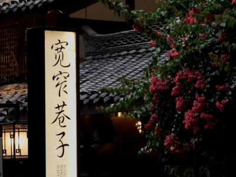
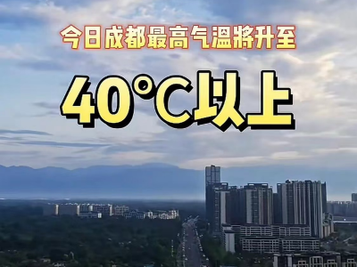

烟火古巷，热度持续飙升的文旅地标
在成都这座充满魅力与历史底蕴的城市中，宽窄巷子宛如一颗璀璨的明珠，散发着独特的光芒，始终占据着热门文旅目的地的C位
国宝魅力持续释放
近期，大熊猫繁育研究基地迎来了一波新生熊猫宝宝的出生潮。这些可爱的熊猫宝宝们毛茸茸的，像一个个圆滚滚的团子，它们或憨态可掬地爬行
问道青城山，热度高涨引客来
“青城天下幽”，成都的青城山景区以其清幽的自然环境、深厚的道教文化和悠久的历史底蕴，成为了众多游客心中的旅游胜地。
【文殊院2025最新指南】这些新变化要知道
坐落于成都青羊区的文殊院，始建于隋朝，距今已有1400余年历史，是川西著名的佛教禅林。这座千年古刹以"智慧"闻名，既是信众心中的修行圣地，也是游客钟爱的文化地标。2025年，文殊院迎来了一系列新变化，在保留传统底蕴的同时，展现出与时俱进的崭新面貌。

成都发布历史最早高温红色预警
2025 年 6 月 11 日 10 时 00 分，成都市气象台更新高温橙色预警信号为高温红色预警信号。预计武侯区、锦江区、青羊区、成华区、金牛区、高新南区、高新西区和青白江区的所有镇（街道）当日最高气温将升至 37℃以上
成都世运会筹备进入冲刺阶段
成都世运会将于 8 月 7 日至 8 月 17 日举行（垒球、软式曲棍球项目提前一天开赛），共设 34 个大项、60 个分项，其中残疾人柔术和残疾人潜水为残疾人运动项目，蹦床、攀岩等项目为 2028 年洛杉矶奥运会正式比赛项目。

成都文旅新场景上线，暑期游玩指南
6 月 13 日，成都市人民政府新闻办公室召开 “世运有礼 成都等你” 暑期消费季新闻发布会。暑期期间，成都市文广旅局围绕 “迎世运 游成都” 主题及 “文化传承、音乐赋能、体育联动” 三大主线，推出系列文旅活动。